散布図行列
データ分析を行うにあたってデータの分布を確認しておくことは重要なポイントのひとつです。データの分布を確認する基本的な方法としては、ヒストグラム、箱ひげ図、散布図などありますが、データ項目が多いとグラフを描くのも一苦労です。そこで、利用したいのが複数の散布図を一度に描く散布図行列（ペアプロット）です。ただ、ペアプロットを描く場合、描くグラフの数がデータ項目数の二乗個になりの処理時間がかかることに注意してください。
必要なパッケージ
本ページは標準パッケージ以外に以下の追加パッケージを用いています。
| Package | Version | Description |
|---|---|---|
| tidyverse | 1.2.1 | Easily Install and Load the ‘Tidyverse’ |
| GGally | 1.3.2 | Extension to ‘ggplot2’ |
| psych | 1.8.3.3 | Procedures for Psychological, Psychometric, and Personality Research |
対象データ
本ページは以下のデータセットを用いています。
| Dataset | Package | Version | Description |
|---|---|---|---|
| iris | datasets | 3.4.4 | Edgar Anderson’s Iris Data |
| mtcars | datasets | 3.4.4 | Motor Trend Car Road Tests |
| airquality | datasets | 3.4.4 | New York Air Quality Measurements |
古典的な散布図行列
Base Plot
データフレームをplot関数に渡すと自動的に散布図行列を描いてくれます。
plot(iris)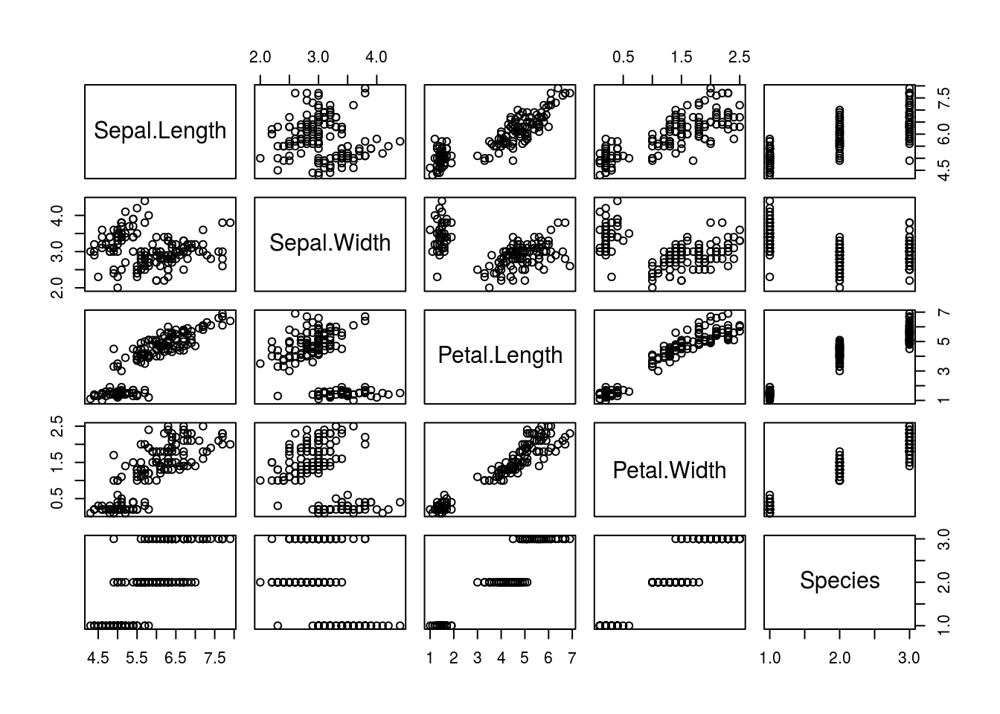
Package psych
psych::pairs.panels関数は散布図行列とともに相関係数を描画してくれます。更に対角にはデータ分布を描いてくれますのでplot関数よりは様々な情報を一度に把握することができます。なお、相関係数は以下から選択可能です。
| 指定方法 | 計算される相関係数 | 備考 |
|---|---|---|
| method = “pearson” | ピアソンの積率相関係数 | デフォルト |
| method = “spearman” | スピアマンの順位相関係数 | ノンパラメトリック |
| method = “kendall” | ケンドールの順位相関係数 | ノンパラメトリック |
psych::pairs.panels(iris, method = "pearson")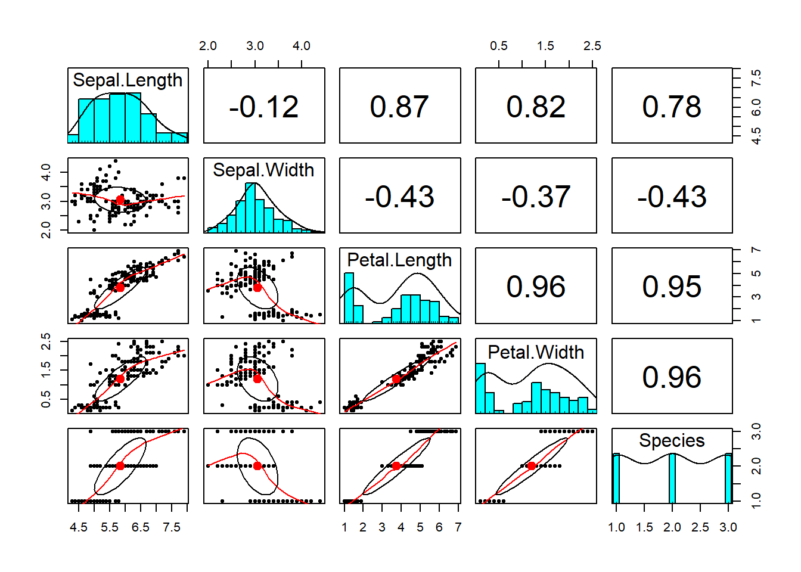
その他のオプションについてはヘルプを参照してください。
Package GGally
ggplot2風の散布図行列を描けるのがGGally::ggscatmatです。GGally::ggpairs関数と異なりカテゴリカルデータ（因子型データ）は描画の適用外となります。ただし、mtcarsデータセットのようにカテゴリカルデータでも因子型データになっていない場合には描画対象となりますので注意してください。
iris %>%
GGally::ggscatmat()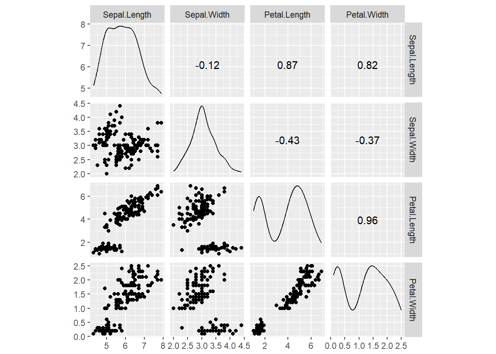
psych::pairs.panels関数と同様に相関係数の計算方法を指定できます。デフォルトではpearsonの積率相関係数ですがcorMethodオプションの指定によりkendallの\(\tau\)やspearmanの\(\rho\)の計算も可能です。
| 指定方法 | 計算される相関係数 | 備考 |
|---|---|---|
| corMethod = “pearson” | ピアソンの積率相関係数 | デフォルト |
| corMethod = “spearman” | スピアマンの順位相関係数 | ノンパラメトリック |
| corMethod = “kendall” | ケンドールの順位相関係数 | ノンパラメトリック |
GGally::ggscatmat関数は残念ながらggplot2風な散布図行列を描く関数でggplot2パッケージの各関数と連携させることはできません。ですので層別描画したい場合はggplot2::aes関数ではなくcolorオプションで指定してください。ggplot2パッケージと連携したい場合には後述のGGally::ggpairs関数を用いてください。
iris %>%
GGally::ggscatmat(color = 'Species', alpha = 0.5)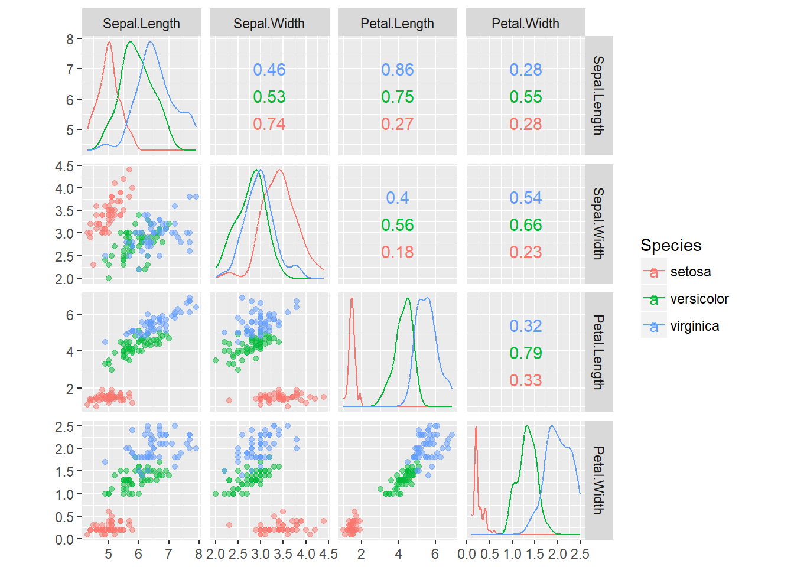
モダンな散布図行列
GGally::ggpairs関数はggplot2ベースのモダンな相関行列を描く関数です。デフォルトではデータ型に応じた最適なグラフタイプを選択して描画してくれます。GGally::ggscatmatとことなりカテゴリカルデータ（因子型データ）も描画対象となります。
iris %>%
GGally::ggpairs()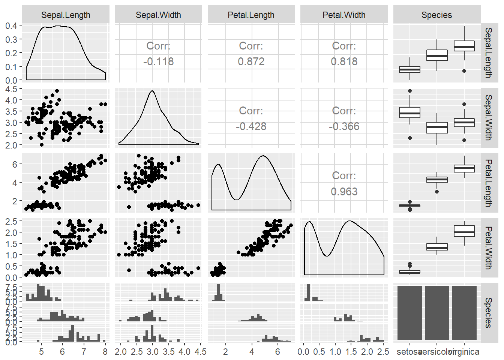
GGally::ggscatmatとは異なりggplot2パッケージがベースですのでggplot2パッケージの関数と同様の指定が可能です。例えばSpeciesで層別して色分けしたい場合はggplot2パッケージと同様にggplot2::aes関数を用います。うれしいことに相関係数も層別で計算してくれます。
iris %>%
GGally::ggpairs(ggplot2::aes(colour = Species, alpha = 0.5))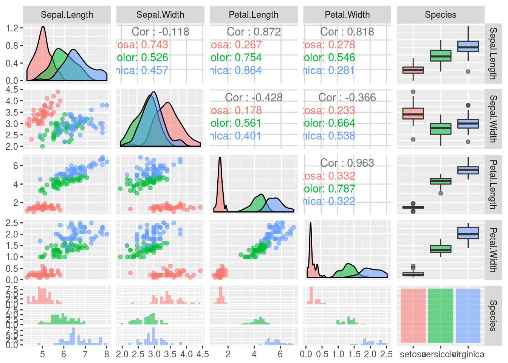
様々なオプション
オプション指定で散布図に回帰線を描くこともできます。
iris %>%
GGally::ggpairs(lower = list(continuous="smooth"),
ggplot2::aes(colour = Species, alpha = 0.5))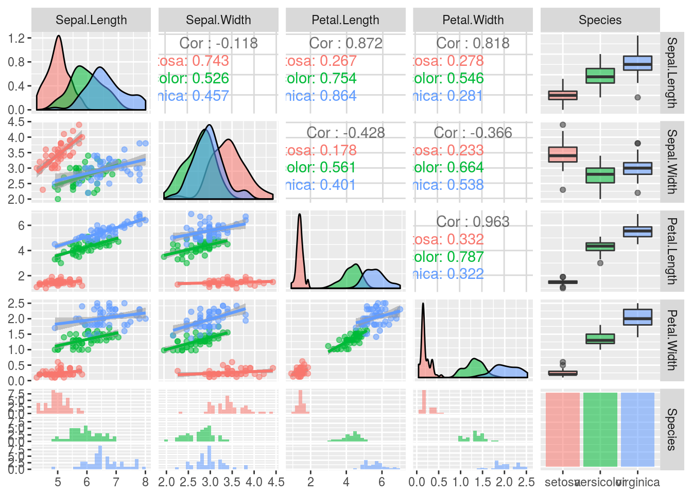
様々なペアプロット
GGally::ggpairs関数は対角の上側（upper）と下側（lower）、対角線上（diag）の三つのエリアに対して以下のパラメータをリスト型で指定することにより様々なペアプロットを描くことが可能です。
| parameter | upper/lower | diag | 備考 |
|---|---|---|---|
| continuous | points, smooth, smooth_loess, density, cor, blank | densityDiag, barDiag, blankDiag | 連続量（数値型）に対するグラフ形式 |
| combo | box, box_no_facet, dot, dot_no_facet, facethist, facetdensity, denstrip, blank | 連続量（数値型）とカテゴリカルデータ（因子型）の組合わせに対するグラフ形式 | |
| discrete | facetbar, ratio, blank | barDiag, blankDiag | カテゴリカルデータ（因子型）に対するグラフ形式 |
| na | na, blank | naDiag, blankDiag | データ全てがNAの場合の表示方法 |
なお、各パラメータのデフォルト値は下表の通りです。
| parameter | upper | lower | diag |
|---|---|---|---|
| continuous | cor | points | densityDiag |
| combo | box_no_facet | facethist | |
| discrete | facetbar | facetbar | barDiag |
| na | na | na | naDiag |
continuousパラメータ
continuousは連続量（数値型データ）に対して有効なオプションでupper/lowerとdiagに指定できますが、upper/lowerに指定できる値とdiagに指定できる値が下表のように異なります。
| parameter | upper/lower | diag |
|---|---|---|
| continuous | points, smooth, smooth_loess, density, cor, blank | densityDiag, barDiag, blankDiag |
各パラメータ値により該当エリアに下表の描画を行います。
| パラメータ値 | 描画内容 | 備考 |
|---|---|---|
| points | 散布図 | lowerのデフォルト値 |
| smooth | 散布図＋回帰直線（信頼区間付き） | |
| smooth_loess | 散布図＋回帰線（信頼区間付き） | |
| density | 密度分布 | |
| cor | 相関係数 | upperのデフォルト値 |
| blank | （描画なし） | |
| densityDiag | 密度分布 | diagのデフォルト値 |
| barDiag | 棒グラフ | |
| blankDiag | （描画なし） |
iris %>%
GGally::ggpairs() +
ggplot2::ggtitle("upper:cor, lower:points, diag:densityDiag, as default")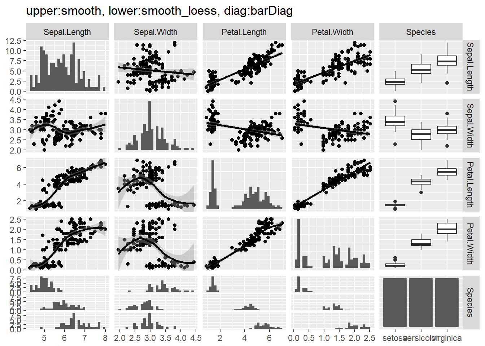
iris %>%
GGally::ggpairs(upper = list(continuous = "smooth"),
lower = list(continuous = "smooth_loess"),
diag = list(continuous = "barDiag")) +
ggplot2::ggtitle("upper:smooth, lower:smooth_loess, diag:barDiag")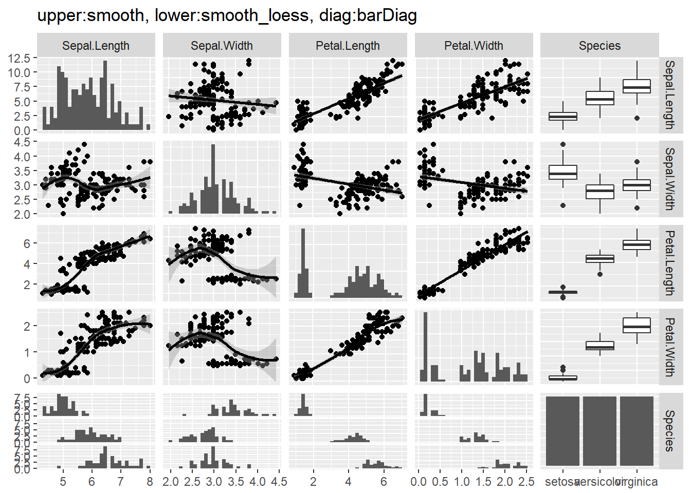
iris %>%
GGally::ggpairs(upper = list(continuous = "density"),
lower = list(continuous = "blank"),
diag = list(continuous = "blankDiag")) +
ggplot2::ggtitle("upper:density, lower:blank, d:blankDiag")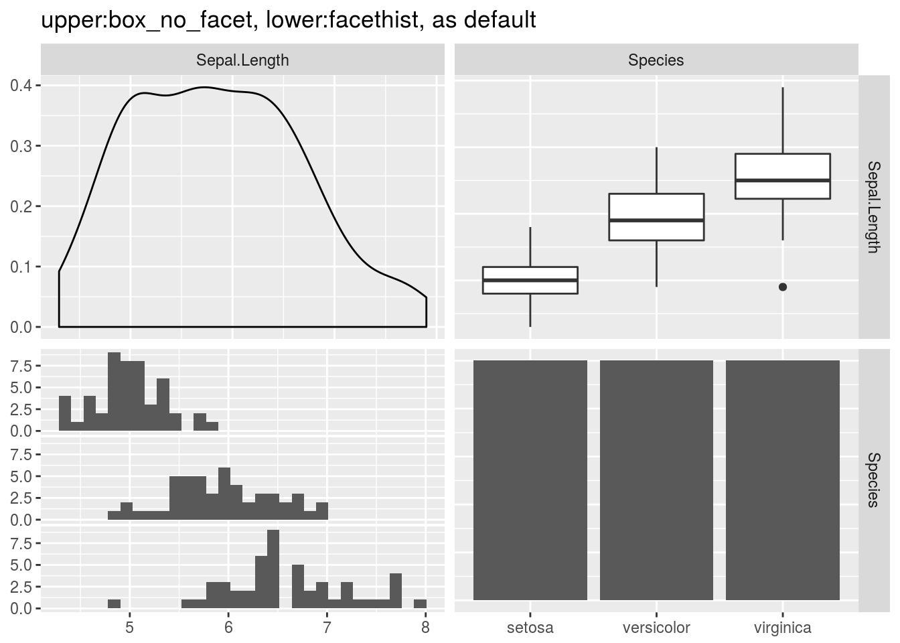
comboパラメータ
comboは連続量データ（数値型データ）とカテゴリカルデータ（因子型データ）の組み合わせに対して有効となるオプションでupper/lowerだけに指定できます。
| parameter | upper/lower | diag |
|---|---|---|
| combo | box, box_no_facet, dot, dot_no_facet, facethist, facetdensity, denstrip, blank | （指定不可） |
| パラメータ値 | 描画内容 | 備考 |
|---|---|---|
| box | 箱ひげ図（層別区切り付き） | |
| box_no_facet | 箱ひげ図 | upperのデフォルト値 |
| dot | 散布図（層別区切り付き） | |
| dot_no_facet | 散布図 | |
| facethist | ヒストグラム（層別区切り付き） | lowerのデフォルト値 |
| facetdensity | 密度分布（層別区切り付き） | |
| denstrip | 密度ストリップ（グラデーション） | |
| blank | （描画なし） |
iris %>%
dplyr::select(Sepal.Length, Species) %>%
GGally::ggpairs() +
ggplot2::ggtitle("upper:box_no_facet, lower:facethist, as default")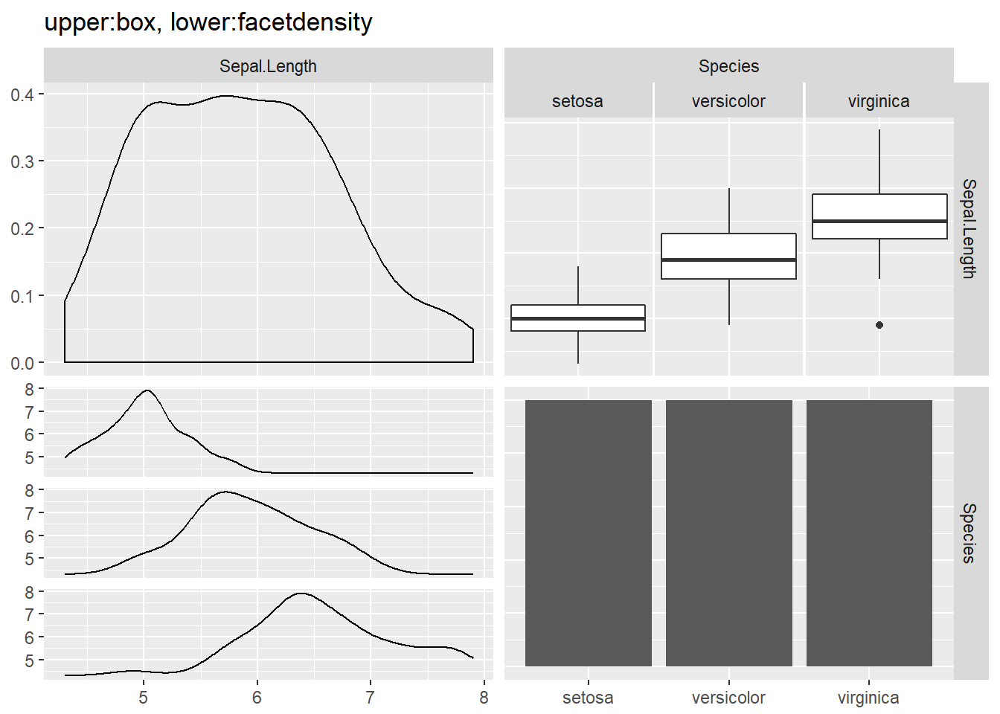
iris %>%
dplyr::select(Sepal.Length, Species) %>%
GGally::ggpairs(upper = list(combo = "box"),
lower = list(combo = "facetdensity")) +
ggplot2::ggtitle("upper:box, lower:facetdensity")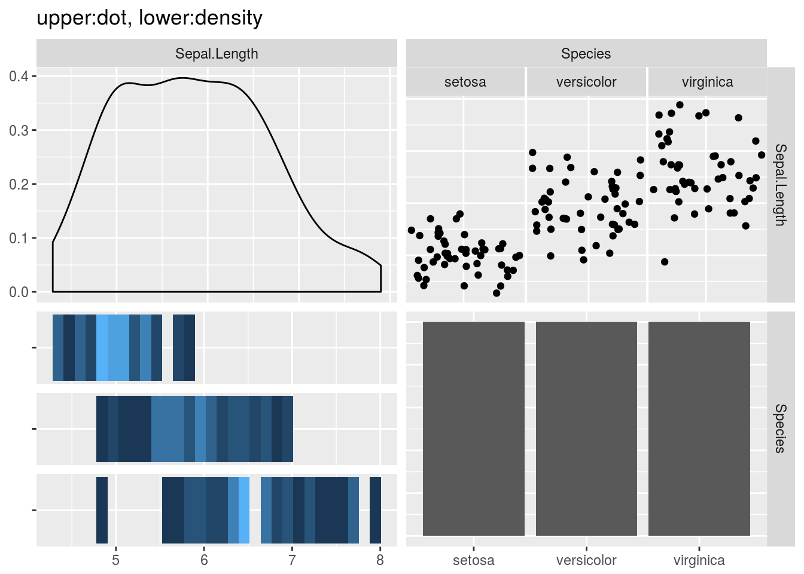
iris %>%
dplyr::select(Sepal.Length, Species) %>%
GGally::ggpairs(upper = list(combo = "dot"),
lower = list(combo = "denstrip")) +
ggplot2::ggtitle("upper:dot, lower:density")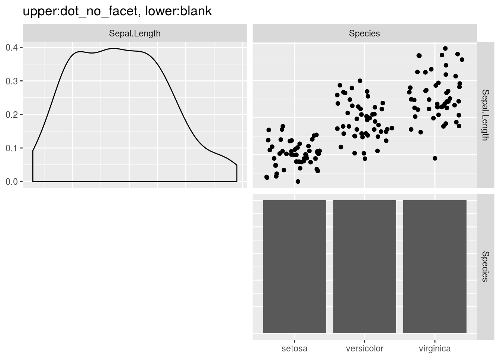
iris %>%
dplyr::select(Sepal.Length, Species) %>%
GGally::ggpairs(upper = list(combo = "dot_no_facet"),
lower = list(combo = "blank")) +
ggplot2::ggtitle("upper:dot_no_facet, lower:blank")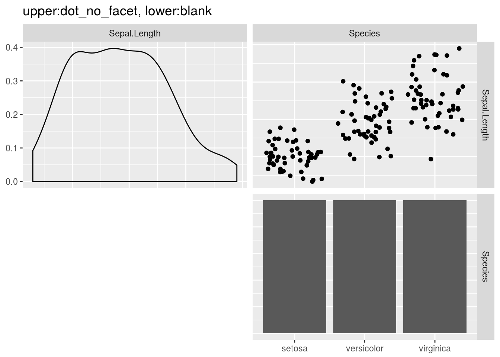
discreteパラメータ
discreteはカテゴリカルデータ（因子型データ）どうしに対して有効なオプションでupper/lowerとdiagに指定できますが、upper/lowerに指定できる値とdiagに指定できる値は異なります。指定した値はタイトルを参照してください。
| parameter | upper/lower | diag |
|---|---|---|
| discrete | facetbar, ratio, blank | barDiag, blankDiag |
set.seed(20)
diamonds %>%
dplyr::sample_n(20) %>%
dplyr::select(cut, color) %>%
GGally::ggpairs() +
ggplot2::ggtitle("upper:facetbar, lower:facetbar, diag:barDiag, as default")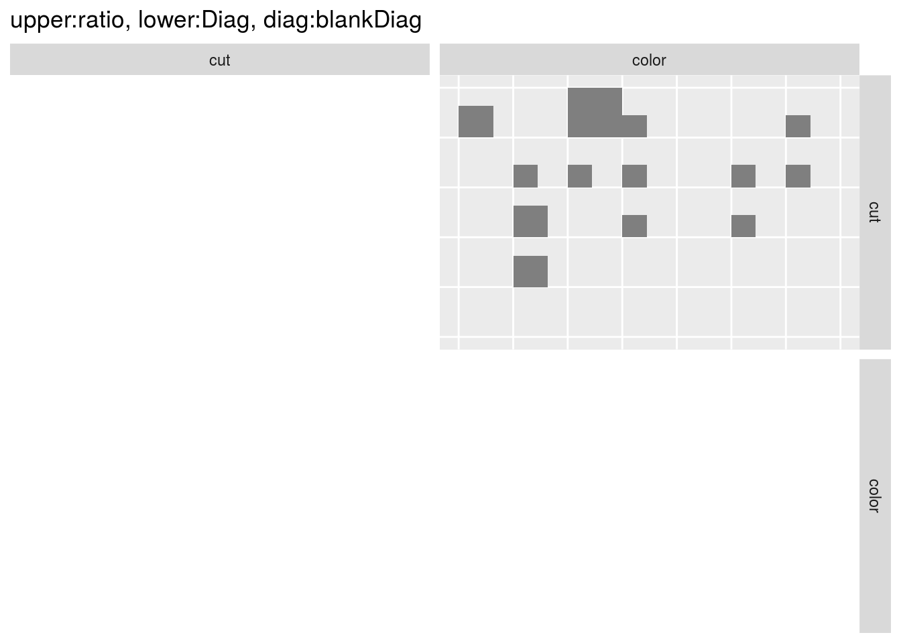
set.seed(20)
ggplot2::diamonds %>%
dplyr::sample_n(20) %>%
dplyr::select(cut, color) %>%
GGally::ggpairs(upper = list(discrete = "ratio"),
lower = list(discrete = "blank"),
diag = list(discrete = "blankDiag")) +
ggplot2::ggtitle("upper:ratio, lower:Diag, diag:blankDiag")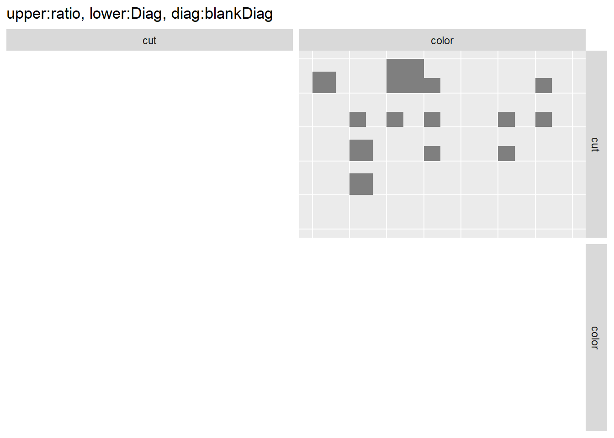
描画パラメータを変更するには
ヒストグラムの階級幅を変更する
デフォルトで描かれるヒストグラムの階級はggplot2::geom_histgram関数と同じで30分割になっています。階級を変更したい場合はGGally::wrap関数を利用して引数（階級幅や階級数）を指定します。
iris %>%
dplyr::select(-Petal.Length, -Petal.Width) %>%
GGally::ggpairs(upper = list(continuous = "smooth"),
lower = list(continuous = "smooth_loess",
combo = GGally::wrap("facethist", binwidth = 0.5)),
diag = list(continuous = GGally::wrap("barDiag", binwidth = 0.5)),
title = "binwidth = 0.5")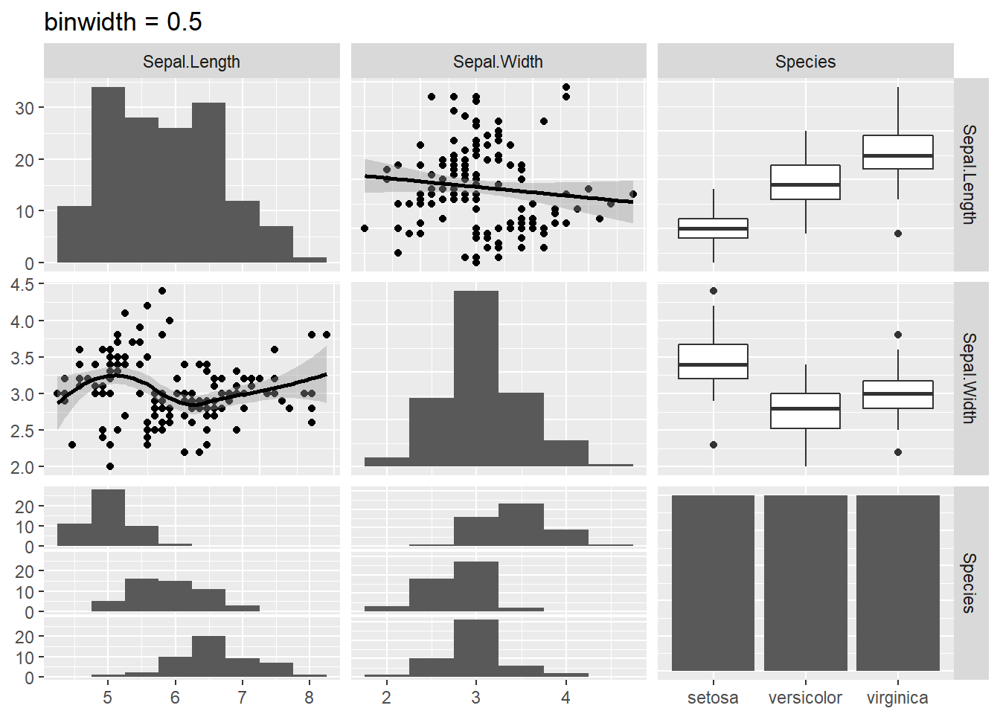
NAが含まれる場合
データにNAが含まれている場合でも特別な指定をしなくても描画処理をしてくれます。例えばairqualityデータセットには複数の項目にNAが含まれています。
airquality
airqualityデータセットを
airquality %>%
GGally::ggpairs(lower = list(continuous = "smooth_loess"),
diag = list(continuous = "barDiag"))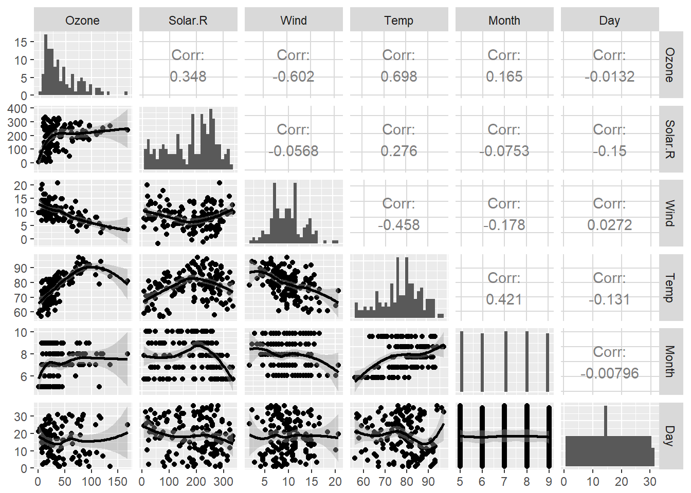